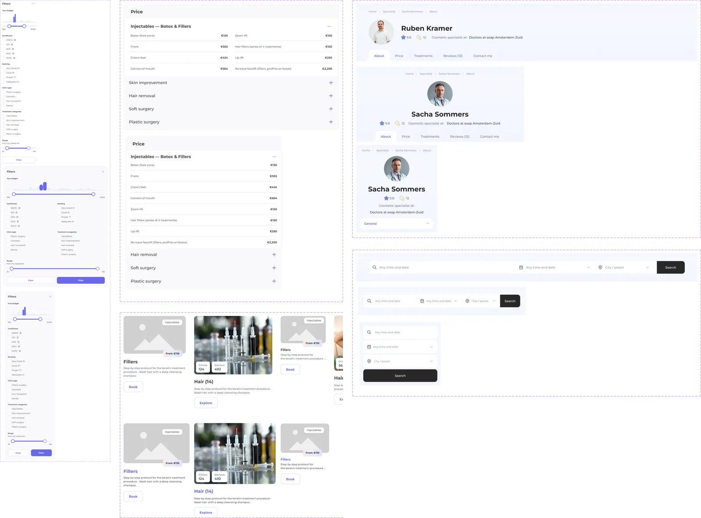
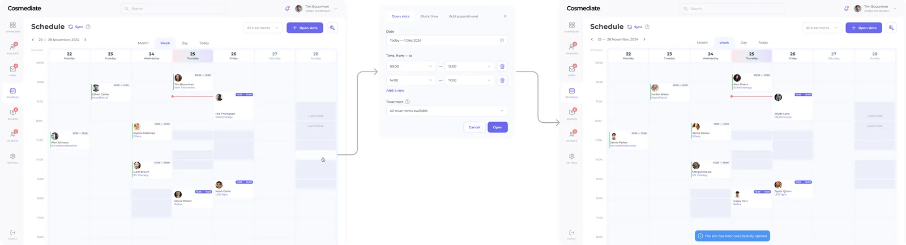
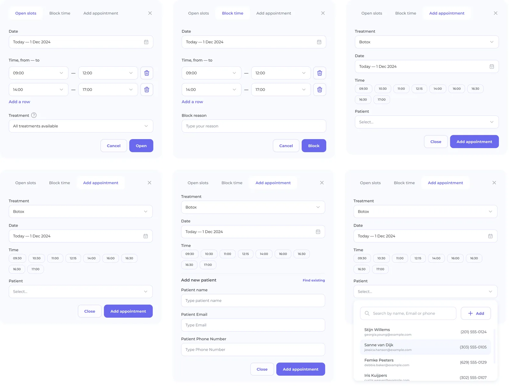
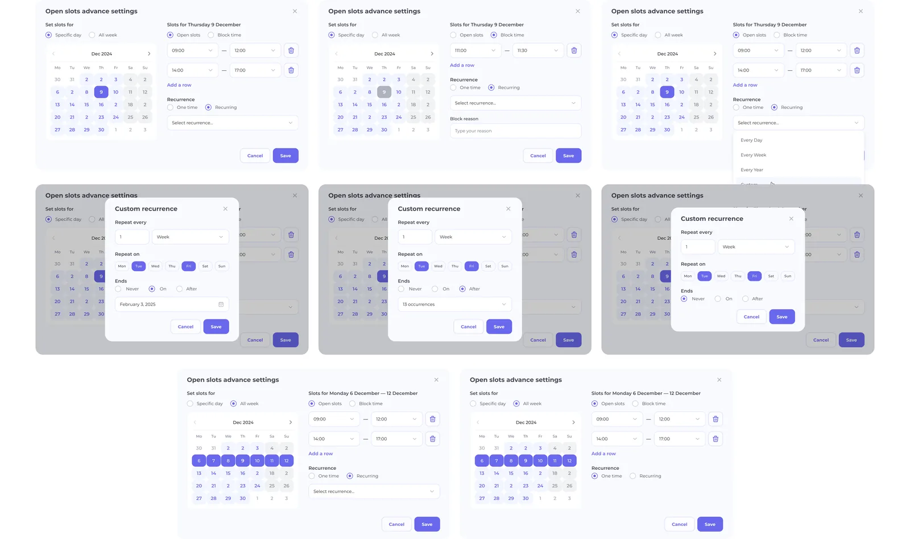
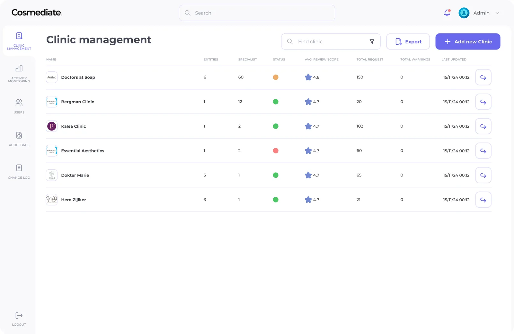

Cosmediate: аудит і редизайн маркетплейсу
Три ролі жили як три різні продукти, і я звів їх в одну систему.
Cosmediate це нідерландська платформа, що з'єднує пацієнтів із сертифікованими косметологічними клініками.
Client, Clinic і Admin були збудовані окремо: спільний домен, але жодної спільної дизайн-системи. Бриф був широкий: перебудувати все, тримаючи досвід внутрішньо консистентним, а кожній ролі дати рівно те, що їй потрібно.
3 ролі повний редизайн дизайн-система з нуля Figma
Скоротив запис із 8 кроків до 5. Людина бронює швидше й не губиться дорогою.
Люди не бронюють клініку, якщо не довіряють їй. Виніс сертифікати, лікарів і відгуки наперед — ще до кнопки запису.
Зробив три продукти — для клієнтів, клінік і адміністраторів — в одній логіці й стилі. Сам, без команди.

Одна система на три ролі
Компонент, що працює в щільному дашборді клініки, має працювати і в чистому booking-флоу пацієнта.
До екранів я змапив інформаційну архітектуру кожної ролі, а потім їхні перетини.
Як доступність клініки з'являється у booking-флоу пацієнта, як дії адміна впливають на те, що бачать клієнти і клініки. Дизайн-система тримала саме цю напругу: семантичні токени замість сирих значень і кожен компонент з усіма станами, бо клініки живуть у крайніх випадках, тобто зайняті слоти, очікування погоджень і протерміновані сертифікати.

Client: booking-флоу на довірі
Запис до косметологічної клініки це не бронь столика: тут бракує довіри, а не слотів.
Я спроєктував флоу як лінійний покроковий процес, де кожен крок відповідає на одне питання: клініка, процедура, слот, дані, підтвердження.
Тут є шар консультації й вимоги до сертифікації, які типові booking-інтерфейси не закривають. Профіль клініки будує довіру ще до бронювання: сертифікати, фото до і після, профілі лікарів і верифіковані відгуки, структуровані так, щоб сигнали довіри йшли першими.


Clinic: операційна щільність
Клініка не мусить читати текст, щоб побачити, що потребує уваги.
Я структурував інтерфейс навколо трьох самодостатніх зон: Календар, Профіль, Налаштування.
Клініка з кількома лікарями, типами процедур і великим потоком бронювань не може дозволити собі двозначність. Управління бронюваннями побудоване на статусах pending, confirmed, completed і cancelled, кожен зі своїм візуальним рішенням і чітким набором дій.

Admin: черга, а не дашборд
Адмінка це внутрішній інструмент: щільність замість декору, ефективність замість онбордингу.
Погодження клінік, верифікацію сертифікатів, модерацію відгуків і управління користувачами я спроєктував як сфокусовані черги, які адмін проходить, а не як вільний інтерфейс.

Чого вимагав проєкт
Трирольові продукти складні тим, що кожне рішення має наслідки нижче за течією.
Тримати цю зв'язність з нуля, без продуктової команди, означало тримати всю систему в голові на кожному кроці.
Зміна в управлінні доступністю клініки змінює те, що пацієнт бачить у бронюванні. Дизайн-система була тим інструментом, який робив це можливим.